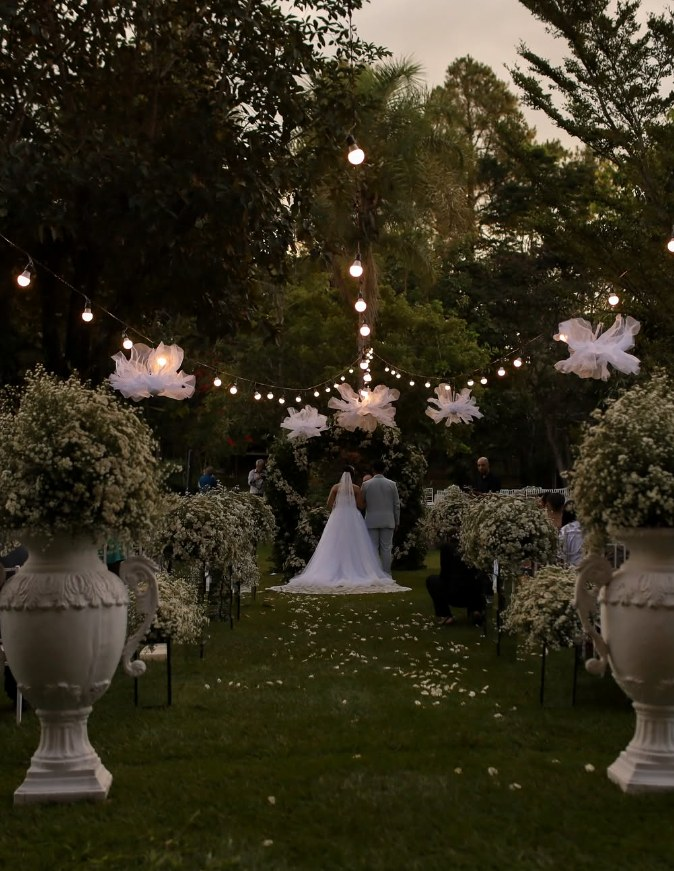
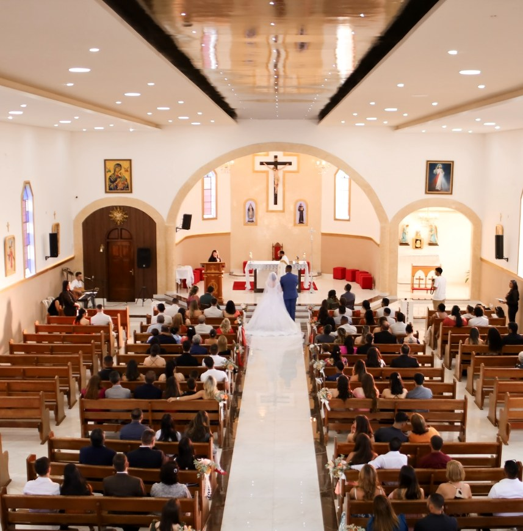
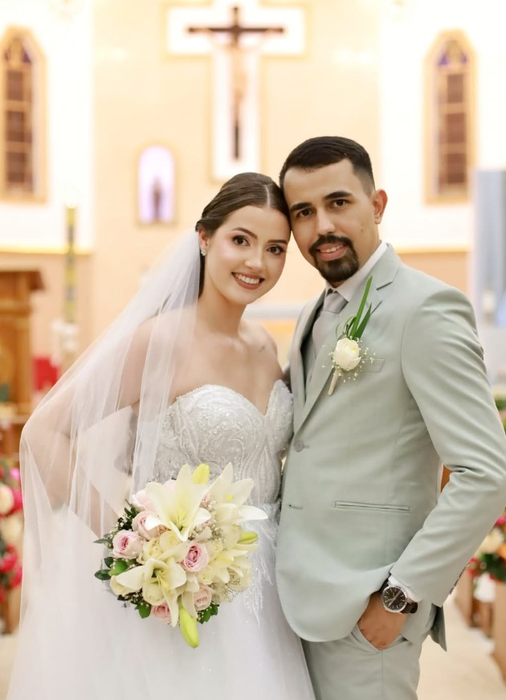
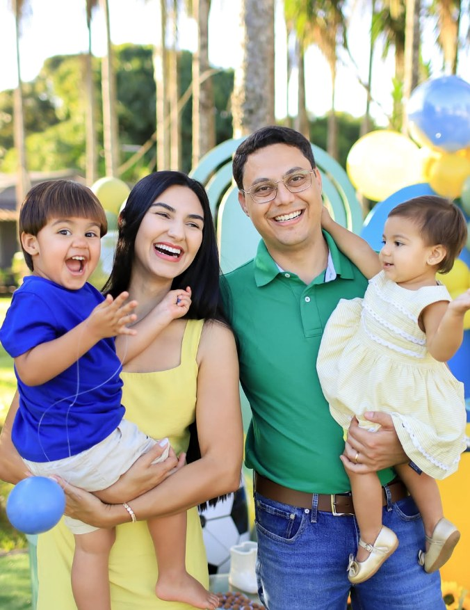
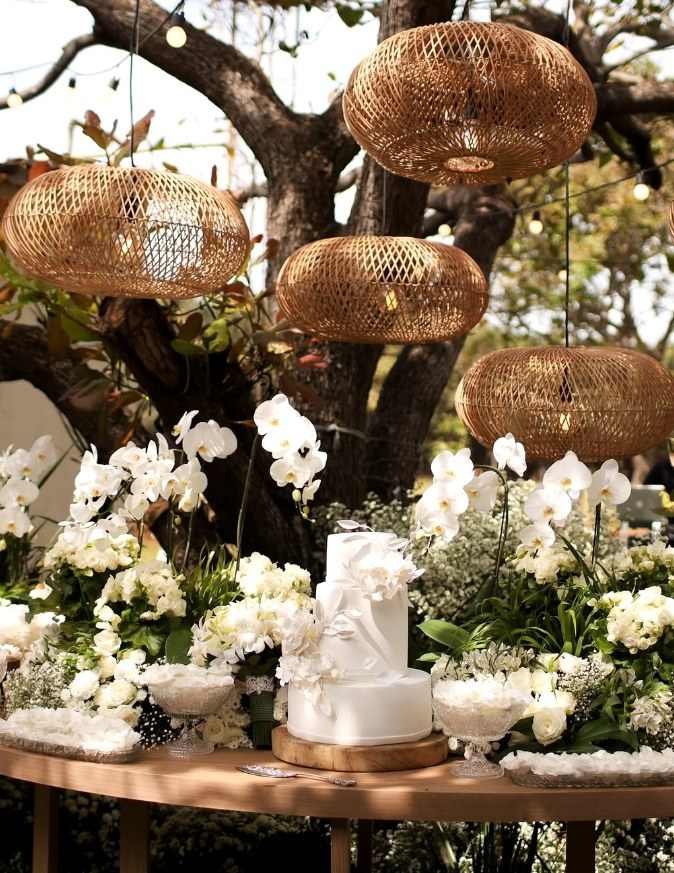
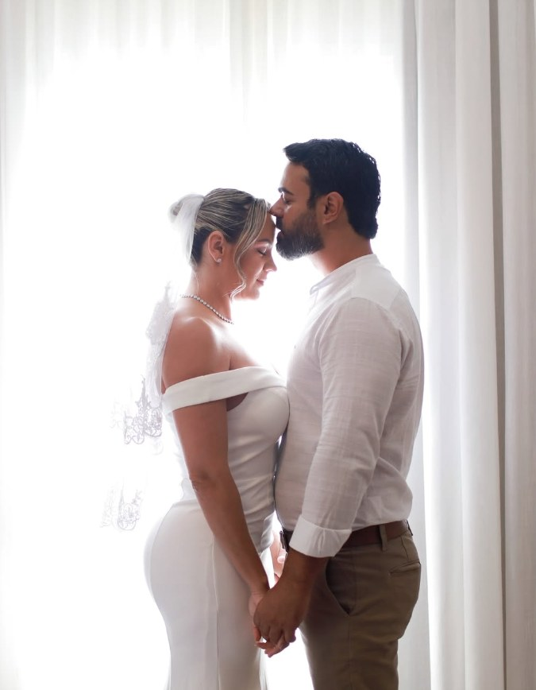
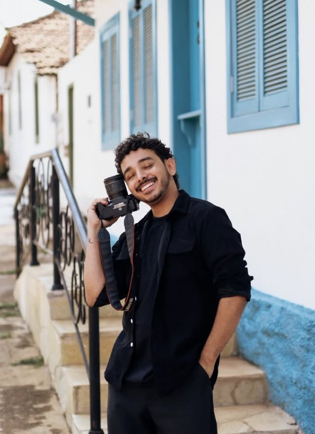

Fotografia autoral
Ricardo Dhener
Casamentos, formaturas e celebrações
registrados com olhar de cinema.
Anatomia do olhar
Uma câmera é feita de vidro, metal e precisão. Nada disso decide a foto.
Abertura
O que decide é quem está atrás dela — e o que ele escolhe deixar entrar.
A câmera registra. O olhar transforma.
Não fotografo eventos. Fotografo o que acontece entre uma parte e outra do roteiro — o riso que escapa, a mão que procura a outra, o pai que disfarça. É ali que a memória fica.
01 — Portfólio
Trabalhos
recentes





02 — Serviços
Cada tipo de dia pede um jeito diferente de estar presente. Abaixo, o que faço e como costumo trabalhar em cada um.
-
01
Casamentos
Do making of ao último abraço da pista. Cobertura completa, com segundo fotógrafo quando o dia pede.
-
02
Formaturas
Colação, baile e ensaio com beca. O ano inteiro cabe numa noite — e ela passa rápido.
-
03
Aniversários
Crianças, 15 anos e adultos. Festa é bagunça, e é exatamente daí que sai foto boa.
-
04
Ensaios
Pré-wedding, gestante, família e individual. Locação escolhida junto, sem pose decorada.
-
05
Eventos e marcas
Confraternizações, lançamentos e conteúdo para redes. Entrega rápida quando o prazo aperta.


04 — Sobre
Chego cedo,
fico quieto,
e espero.
Comecei fotografando o que estava por perto: a rua onde cresci, os amigos, as festas de domingo que ninguém achava importante registrar. Demorei pra entender que o que me prendia não era o equipamento — era o instante logo antes de alguém perceber que está sendo fotografado.
Hoje trabalho com casamentos, formaturas e aniversários. O que mudou foi a escala. O que não mudou foi o jeito de olhar.
Não peço pose. Não interrompo. Se você me contratar esperando um fotógrafo que grita “olha aqui!”, provavelmente eu não sou a pessoa certa. Se você quiser ver o seu dia do jeito que ele realmente foi, a gente vai se entender.
05 — Como funciona
Quatro etapas,
nenhuma surpresa
-
01
Conversa
Você me chama no WhatsApp e me conta a data, o local e o tamanho da coisa. Respondo com disponibilidade e valores no mesmo dia.
-
02
Planejamento
Fechado o contrato, montamos juntos o roteiro de horários e a lista de fotos que não podem faltar. Se der, visito o local antes.
-
03
O dia
Chego antes do combinado. Trabalho com luz natural sempre que possível e com flash quando ela acaba. Você quase não vai notar que estou lá.
-
04
Entrega
Prévia em até 7 dias. Galeria completa tratada em galeria online, com download em alta e link para compartilhar com quem você quiser.
06 — Quem já passou por aqui
“A gente contratou pensando nas fotos da cerimônia. As que a gente mais olha hoje são as da festa, que nem sabíamos que ele tinha tirado.”
Marina e Téocasamento
“Minha mãe chorou vendo a galeria. Ela apareceu em foto que ninguém pediu, do jeito que ela é. Isso valeu tudo.”
Letícia A.formatura
“Festa de criança é caos. Ele entrou no caos junto e voltou com trinta fotos que a gente vai mostrar pro Bento quando ele crescer.”
Família Rochaaniversário infantil
07 — Vamos combinar
Me conta que dia
é esse.
Data, cidade e o que você imagina. Respondo pessoalmente, normalmente no mesmo dia.
Chamar no WhatsAppOu me acompanhe em @ricardodhener e @dhener.eventos.